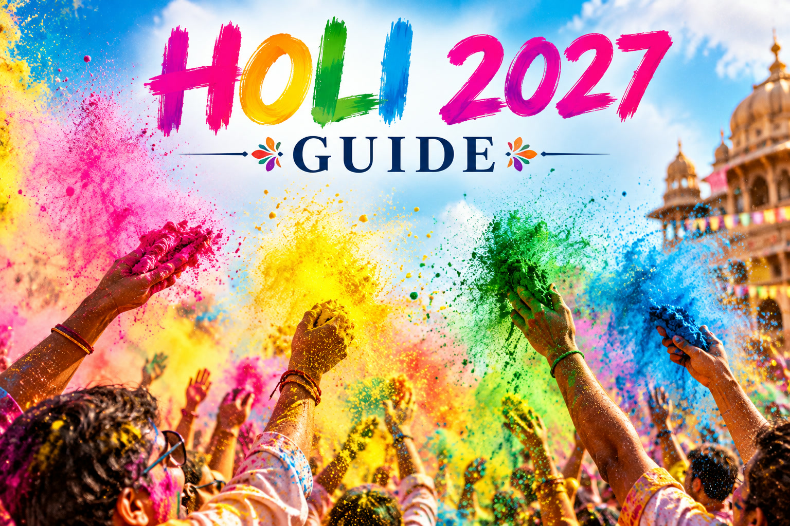

Holi 2027: Date, Wishes & Celebration Guide
Published October 12, 2026 · Updated October 12, 2026 · By EventBuzz Team

Holi, the festival of colors, is one of the most joyful celebrations in the world — a day when streets fill with colored powder, strangers become friends, and every grievance is washed away in laughter. Holi 2027 falls on Monday, March 22, arriving with the first warmth of spring. Whether you are playing with gulal for the first time or hosting a full celebration, this guide covers everything: the date and its significance, how Holi is actually celebrated, an organic colors guide that is kind to skin and the planet, wishes and messages to send, safety plus skin and hair care tips, and the food traditions that make the day complete.
Holi 2027 Date and Significance
Holi is celebrated on the full-moon day (Purnima) of the Hindu month of Phalguna, which marks the arrival of spring. In 2027, that full moon falls on Monday, March 22, and that is the day of color play (Rangwali Holi or Dhulandi). The evening before, on Sunday, March 21, communities light Holika Dahan bonfires — the festival's symbolic opening.
The festival's meaning is layered. Mythologically, Holi celebrates the victory of devotion and good over evil: the story of Prahlad, whose faith in Lord Vishnu saved him from the fire, while his aunt Holika — the evil that carried him into it — perished. Socially, Holi is the great leveler. For one day, the colors erase distinctions of age, status, and background; everyone looks the same under a coat of pink and green. Emotionally, it is a festival of renewal — a sanctioned moment to forgive old quarrels, start fresh, and greet spring with open arms.
How Holi Is Celebrated: The Two Days
Holi unfolds over two days, and each has its own character:
- Day 1 — Holika Dahan (March 21, 2027): after sunset, neighborhoods gather around bonfires. Wood and dry leaves are stacked, prayers are offered, and the fire is lit as a symbol of burning away evil. Families circle the fire, and in many regions people roast corn and potatoes in its embers. It is a calm, communal evening — the deep breath before the color storm.
- Day 2 — Rangwali Holi / Dhulandi (March 22, 2027): this is the Holi the world knows. From mid-morning, streets, courtyards, and rooftops erupt with dry gulal powder, colored water from pichkaris (water guns), and water balloons. Groups of friends roam from house to house, music plays, people dance, and by afternoon everyone is an unrecognizable rainbow. Celebrations typically wind down by late afternoon, followed by baths, fresh clothes, and festive meals.
Famous regional celebrations add their own flavor: Mathura and Vrindavan celebrate for nearly a week with flower Holi (Phoolon wali Holi) and the playful Lathmar Holi of Barsana; in West Bengal, the festival is observed as Dol Jatra with processions of the deity Krishna.
Organic Colors Guide: Play Safe
The single most important upgrade to your Holi is the colors you buy. Cheap synthetic colors can contain industrial dyes, mica, and harsh chemicals that irritate skin and eyes and harm the environment. Organic gulal — made from turmeric, beetroot, henna, marigold, and other natural sources — is safer for everyone:
- Look for the label: genuine herbal or organic gulal is marketed as such and usually costs a little more. If a color is suspiciously cheap and unnaturally metallic or neon, skip it.
- Know your sources: turmeric gives yellow, beetroot and kumkum give reds and pinks, henna and dried leaves give greens, indigo and dried jacaranda flowers give blues. Reputable brands list these plant sources on the packet.
- Test first: dab a little on your inner wrist the day before. If it itches or reddens, do not use it on your face or body.
- Water colors need care too: for pichkaris and balloons, dissolve only skin-safe colors in water — never use chemical dyes, paints, or permanent inks, which can cause real harm to skin and eyes.
- Protect the environment: natural colors wash away harmlessly; synthetic colors stain soil and waterways. Playing organic is a gift to your neighborhood too.
Skin, Hair and Eye Care Before and After
A little preparation before stepping into the color storm saves you days of stained skin and dry hair. Treat this as non-negotiable Holi prep:
- Oil your skin and hair: apply coconut or mustard oil generously over all exposed skin and through your hair an hour before playing. Oil creates a barrier so colors wash off easily instead of staining.
- Sunscreen first: March sun is stronger than it feels. Apply a waterproof sunscreen under the oil layer — sunburn plus color irritation is a miserable combination.
- Protect nails and lips: a coat of dark nail polish and a thick lip balm keep colors from settling into nails and lips.
- Cover up smartly: wear old, full-sleeve white or light-colored clothes (the traditional choice — they show the colors beautifully), sunglasses or protective eyewear, and tie long hair back or cover it with a cap or bandana.
- After playing: rinse with plain water first to wash off loose color, then use a mild soap or besan (gram flour) paste — never scrub harshly. Follow with moisturizer, and use a gentle clarifying shampoo followed by conditioner for colored hair. Avoid bleach or harsh chemical treatments for a few days.
Safety Tips for a Worry-Free Holi
- Keep colors away from eyes: never throw dry color directly at someone's face. If color gets in your eyes, rinse immediately with clean water and do not rub.
- Respect consent: the spirit of Holi is joyful, not forceful. Never smear color on anyone who does not want to play — especially strangers, the elderly, and pets.
- Watch your step: wet colored water makes floors and streets slippery. Wear footwear with grip, and keep celebrations away from stair edges and balconies.
- Hydrate and eat: hours in the sun with colored water flying around dehydrate you fast. Drink water through the day and eat a proper breakfast before playing.
- Keep pets indoors: colors and noise stress animals, and many color powders are unsafe for them. Give your pets a quiet room for the day.
- Protect your phone: use a waterproof pouch or leave valuables at home. Colored water and electronics are enemies.
Holi Wishes and Messages to Send
Holi greetings are short, warm, and colorful. A few ready-to-send lines:
- "Wishing you a Holi filled with sweet moments and colorful memories. Happy Holi 2027!"
- "May your life be as vibrant as the colors of Holi. Have a joyful and safe celebration!"
- "Let the colors of Holi bring happiness, health, and prosperity to you and your family. Happy Holi!"
- "Forget the worries, forgive the past — it's time to paint the town with joy. Happy Holi 2027!"
- "May this Holi wash away all sorrows and fill your heart with love and laughter."
- In Hindi/Hinglish: "Holi ke rangon se bhari ho aapki zindagi — Happy Holi!"
Pair a message with a photo from your own celebration for a greeting that feels personal rather than forwarded.
Food Traditions: What Holi Tastes Like
Holi food is indulgent, festive, and built for sharing after hours of play. The stars of the day:
- Gujiya: the undisputed queen of Holi sweets — crisp pastry crescents filled with sweetened khoya, coconut, and nuts. No Holi table is complete without them.
- Thandai: the festival's signature drink — chilled milk blended with almonds, saffron, cardamom, and rose. Served ice-cold to crowds of thirsty players.
- Dahi bhalla and chaat: tangy, cooling street-style snacks that hit perfectly after salty-sweet play in the sun.
- Malpua and jalebi: syrupy, golden festival sweets — malpua with rabri is a Holi-weekend classic in many homes.
- Namkeen and snacks: mathri, namak para, and roasted nuts to balance all the sweetness through the day.
If you are hosting, prepare gujiya and thandai the evening before — both keep well overnight and let you enjoy the morning's color play instead of the kitchen.
Holi is the one day the whole world agrees on: be joyful, be kind, and leave everything a little more colorful than you found it.
Frequently Asked Questions
When is Holi in 2027?
Holi 2027 is on Monday, March 22, 2027. Holika Dahan, the bonfire ceremony, takes place the evening before, on Sunday, March 21.
What is the significance of Holi?
Holi celebrates the victory of good over evil (the story of Prahlad and Holika), the arrival of spring, and social unity — for one day, colors erase distinctions of age, status, and background, and old quarrels are forgiven.
Are Holi colors safe for skin?
Organic gulal made from plant sources like turmeric, beetroot, and henna is much safer than cheap synthetic colors, which can contain harsh chemicals. Always test color on your wrist first, oil your skin before playing, and avoid chemical dyes entirely.
How do I protect my hair from Holi colors?
Oil your hair generously with coconut oil before playing, tie it back or cover it with a cap, and afterward rinse with plain water first, then use a mild shampoo and conditioner. Avoid harsh chemical treatments for a few days.
What foods are traditional for Holi?
Gujiya (sweet khoya-filled pastries), thandai (spiced chilled milk), dahi bhalla, chaat, malpua, and jalebi are the classic Holi foods, alongside namkeen snacks.
How can I celebrate Holi safely?
Use only organic colors, keep color away from eyes, never force color on anyone unwilling, wear grippy footwear on wet surfaces, stay hydrated, keep pets indoors, and protect your phone in a waterproof pouch.
Conclusion
Holi 2027 arrives on Monday, March 22 — one bright day to play, forgive, feast, and start spring fresh. Buy organic colors, oil your skin and hair, respect everyone's right to opt out, and end the day with gujiya and thandai. The color washes off by evening; the feeling of it stays much longer.
More festival help from EventBuzz:
Happy Holi 2027 — may your day be bright, safe, and unforgettable.